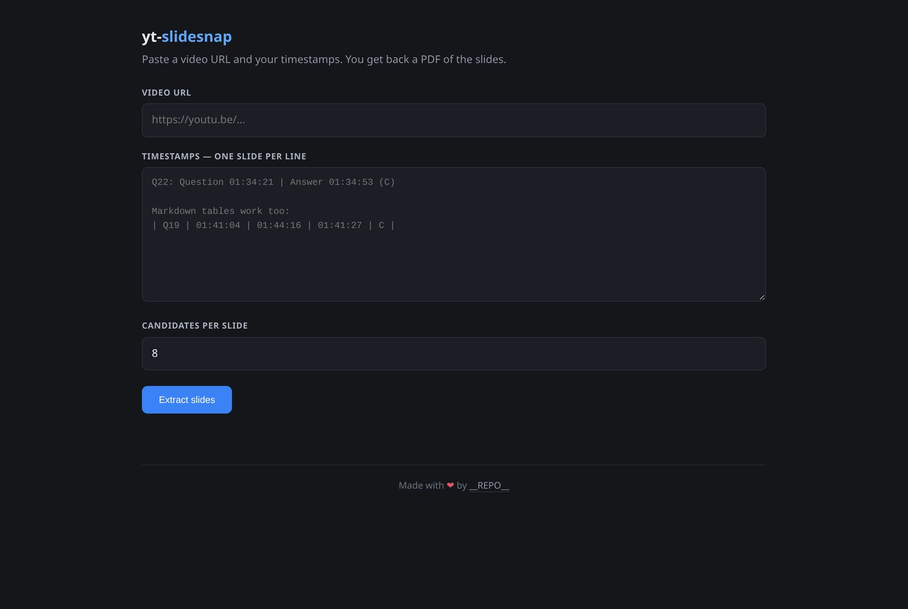

What it is
yt-slidesnap takes a lecture video and the timestamps where each question is on screen, and gives back a clean PDF of the slides — one page each, no answers, no video downloaded. It pulls frames straight from the stream, so a 2.5-hour class becomes a tidy document in seconds.

The tedious case
It is built for the exact situation that made me write it: a long recorded class with dozens of questions in it, where you want the question slides in a document instead of scrubbing a timeline by hand and screenshotting each one. Doing that once is tedious; doing it every week is a waste of an evening.
How it works
- You give it a video URL and a list of timestamps.
- It resolves the stream (no full download) and seeks to each window.
- For each slide it samples several candidate frames and picks the one where the presenter is least likely to be blocking the slide.
- It assembles the chosen frames into a single PDF, and writes an
auto_picked.pngcontact sheet so you can eyeball what it chose.
A full run of 16 slides takes roughly 25 seconds, including resolving the stream URL. You do not need ffmpeg installed — a build ships inside the tool's dependencies.
Timestamp handling
The input is deliberately forgiving. Paste whatever you have — Q22: Question 01:34:21 | Answer 01:34:53 (C), a markdown table, or a pipe- or comma-separated list — and it sorts it out.
Two rules exist because guessing wrong would silently capture the wrong frame:
- The first stamp on a line is when the slide appears. Every later stamp is a ceiling and the earliest one wins, so an answer can never leak into the PDF.
- Two rules on ambiguity: a two-part stamp is always minutes:seconds (write
1:34:21for an hour), and a lone integer is treated as seconds only when it cannot be an id. When in doubt, write5661s.
Run it with --dry-run first and it prints exactly the window it understood for each row — so a misread shows up before you spend a run on it.
The web UI
If you would rather click than type flags, yt-slidesnap serve starts a local web page on 127.0.0.1:8765 — no account, no cloud. Same engine, a couple of text boxes and a button.
Install it
Install it as a command with pipx install git+https://github.com/pavnxet/yt-slidesnap, or clone the repo and run python slidesnap.py.